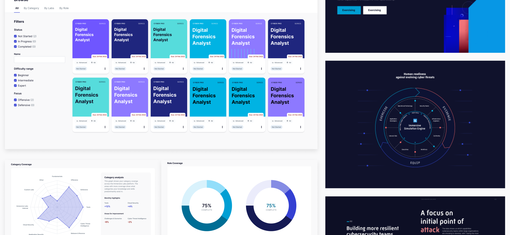
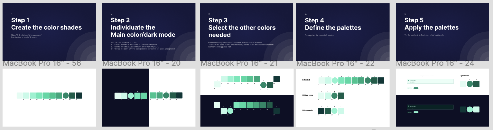
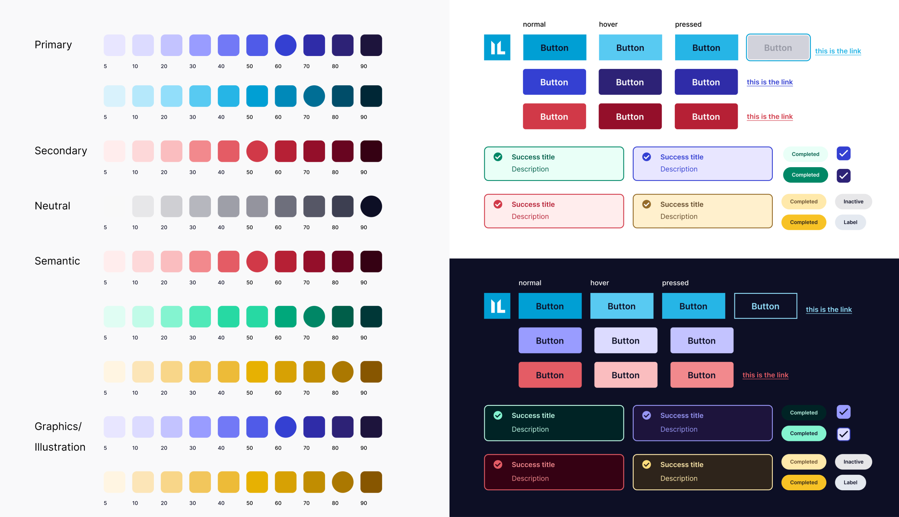
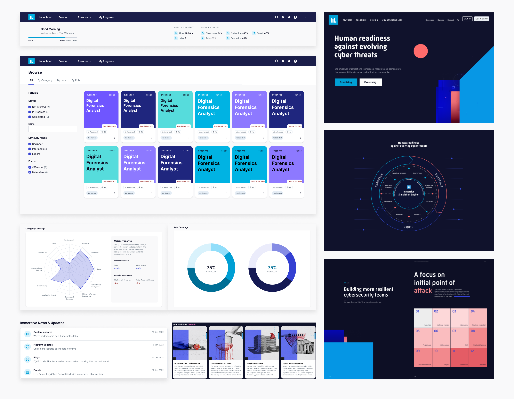
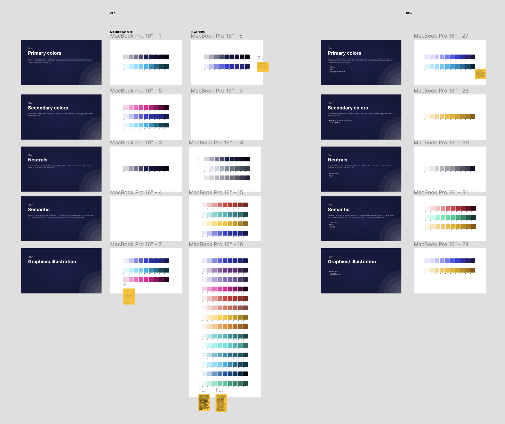
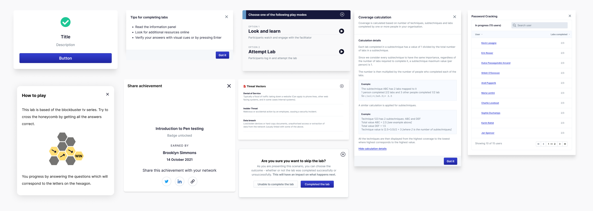
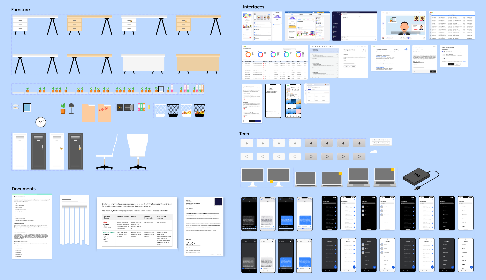

IMMERSIVE LABS
Real-time measurement of human cyber capabilities

TEAM
UX team, Product Manager, Engineers
MY ROLE
Visual Design, Interaction Design, Motion design, Prototyping
ABOUT
Creating a stronger sense of brand while maintaining a high level of accessibility and functionality.
The Immersive lab platform powers the real-time measurement of human cyber capabilities across technical and non-technical teams—any role within the organization, including cyber teams, developers, engineers and executives—all in one platform. This technology is already helping over 300 enterprises around the world, including AirBnB, P&G, Citibank, Sophos and the NHS, while around 5,000 labs are completed every single day.
I worked with the UX team to redesign the platform, thereby improving the user experience of the platform, which in turn helped the business grow and increase customer retention. The measures of success was conversion rate, customer satisfaction, engagement and retention.
UI STYLE GUIDE REDESIGN
Goals:
- To create a stronger sense of brand and a connection between the platform and the marketing sites.
- To define how color is used across the platform and the marketing site.
- To give colors a role and set some rules around them (color hierarchy).
- Identify a method that help us to select the shades of colors based on accessibility and functionality.




MODAL REDESIGN
Goals
- Give users a sense of completion, or moment of delight which could potentially lead to more engagement.
- To create a family of modals to use when a user completes a process, define a pattern of behaviour by establishing consistent user interaction to help users learn when they have completed a process.
- To investigate and document where the success modal currently appears in the platform, define the rule of behaviour; when it should appear, map where in the platform they should be used according to the rule.

ASSET LIBRARY
Goals:
- Research shows that combining facts with images, people are more likely to understand and remember the material, which would enhance understanding.
- To create a library of commonly used assets and environments for a consistent look accross all assets.
- To create a color palette and define how color is used in scenario asset creation.

EXPLAINER VIDEOS
Goals:
- Using videos creates a more engaging sensory experience for users than using text alone, they can see and hear the concept being explained and can process it in the same way they process everyday interactions.
- To increase knowledge retention and customer engagement with learning materials, which in turn helps boost achievement and active learning.
- To create a reusable storyboard template for explainer and summary videos.
REFLECTIONS
What I’ve learnt so far...
This was my first job after my masters program and working on these projects was a great experience and way to apply theoretical knowledge in real projects. . Some of the things I learnt:
- Learning how to manage each stakeholder and handling tradeoffs as each stakeholder has a different goal and point of view.
- Working closely with a developer right from the exploration stage was great as I was able to identify what designs would be feasible and identify any possible constraints.
- As some of these weren’t tested with Users at this point, It was helpful to work with other members of the UX team as they provided feedback and suggestions through critic sessions.
Previous